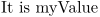
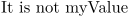

Contents
Summary
The command \setupdocument is used for configuring \startdocument.
Settings
| \setupdocument[...,...][...=...,...] | |
| [...,...] | name |
| before | command |
| after | command |
| metadata:author | text |
| metadata:title | text |
| metadata:subject | text |
| metadata:keywords | text |
| key | value |
| Option | Explanation | ||
|---|---|---|---|
| before |
|
||
| after |
|
||
| metadata:author |
|
||
| metadata:title |
|
||
| metadata:subject |
|
||
| metadata:keywords |
|
||
| cd:key |
|
||
Description
With
\setupdocument
you can preset values to be used by
\startdocument
. Any argument passed to
\setupdocument
can be queried later with
\documentvariable
.
See \startdocument for an example.
Examples
Example 1
-
\startdocument[myKey=myValue] \doifelse {\documentvariable{myKey}} {myValue} {It is myValue} {It is not myValue} \stopdocument
- 
-
\startdocument[myKey=myValuee] \doifelse {\documentvariable{myKey}} {myValue} {It is myValue} {It is not myValue} \stopdocument
- 